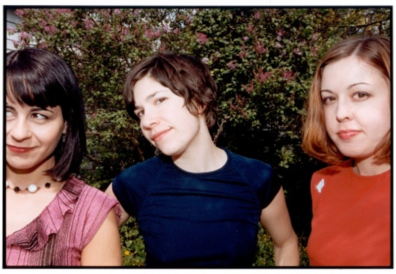

Sleater-Kinney came crashing out of the ’90s Pacific Northwest riot grrrl scene, setting a new bar for punk’s political insight and emotional impact. Hailed as “America’s best rock band” by Greil Marcus in Time Magazine, and as “America’s best punk band ever. EVER,” by Rob Sheffield in Rolling Stone, the band put out seven searing albums in 10 years before going on indefinite hiatus in 2006. Almost a decade later, the trio–guitarists/vocalists Corin Tucker and Carrie Brownstein, and drummer Janet Weiss–has come back together for 2015’s No Cities To Love.
Tucker and Brownstein met in 1992 and formed Sleater-Kinney in a brick duplex in Olympia, WA in 1994. Students at Evergreen State College and members of bands Heavens To Betsy and Excuse 17, respectively, Tucker and Brownstein built Sleater-Kinney from the fire and feminism of their riot grrrl experience with a language and sound all their own. Named for a road in a neighboring town, Sleater-Kinney recorded their 22-minute, 1995 self-titled debut in a single day on a trip to Australia. With drummer Laura MacFarlane, Sleater-Kinney planted the seeds of the band’s distinctive sound, defined by Tucker’s urgent vocals and the remarkable interplay between her and Brownstein’s guitars.
With 1996’s Call The Doctor, on Donna Dresch’s punk label Chainsaw, Sleater-Kinney was no longer the side project it had been when it formed, and the band’s songwriting and dynamic gained even more clarity. Brownstein took on more vocal duties, and the give and take of two powerful voices joined that of the guitars. Tucker and Brownstein honed their process of writing songs together, which Brownstein says is “very specific and unique because the parts are relational to the other person.” Along with the its pointed social messages, the album eviscerated the idea that rock godhood belonged to men alone with “I Wanna Be Your Joey Ramone.” Call The Doctor also brought Sleater-Kinney together with John Goodmanson, who would go on to produce several of the band’s albums including No Cities To Love.
That same year, in need of a new drummer, Tucker and Brownstein met Jr. High and Quasi’s Janet Weiss through mutual friends. During their first practice with Weiss, the guitarists brought out a new song called “Dig Me Out,” and Weiss wrote the fierce, solid drum part that would set Sleater-Kinney’s ongoing fiery chemistry in motion. 
“I always considered Corin and Carrie to be musical soulmates in the tradition of the greats,” says Weiss, whose job, she says, is to “take their flourishing parts and melodies and push them as far as I can.” This extraordinary formula crystalized on 1997’s breakout set Dig Me Out, which brought the band to Kill Rock Stars and again had Goodmanson in the production seat. More pop-leaning than previous records but every bit as hard-hitting, Dig Me Out confidently took on both pleasure and pain with anthems like “Turn It On” and “One More Hour.”
Sleater-Kinney’s breakneck pace continued with The Hot Rock in 1999 and All Hands on the Bad One in 2000. The former, produced by Roger Moutenot, stepped down the band’s velocity but not its intensity or complexity; the latter brought John Goodmanson back to the boards for hook-laden, lucidly feminist songs including “#1 Must Have,” “Male Model” and “You’re No Rock and Roll Fun.”
In 2001, Sleater-Kinney took a break while Tucker and husband Lance Bangs became parents to son Marshall. The events around his premature birth, as well as the September 11th terrorist attacks, in part influenced 2002’s critically acclaimed One Beat. A political and anxious record, One Beat is also supercharged and strident, facing life and death from the band’s singular perspective.
Three years later, in need of a new setting and musical focus, the band signed with Sub Pop and enlisted Flaming Lips producer Dave Fridmann for 2005’s The Woods. Recorded in the literal woods of upstate New York, Sleater-Kinney’s final record before their hiatus took the band to significantly different musical landscapes, drawing on classic and improvisational rock as well as self-imposed discomfort and unfamiliarity.
The following year, Sleater-Kinney announced an indefinite break and played a triumphant, bittersweet farewell show at Portland’s Crystal Ballroom on August 12, 2006. “It was kind of a perfect storm between the anxiety and stress of touring, and parenting,” says Tucker of the need for the hiatus. “Those are challenging issues, and they will continue to challenge us, but I think the time off has given us a chance to come up with some different tools for managing them.”
And with those tools, as well as a decade of broad creative experience, Sleater-Kinney has created No Cities to Love. “We sound possessed on these songs,” says Brownstein. “Willing it all–the entire weight of the band and what it means to us—back into existence.” The result is a record that grapples with love, power and redemption without restraint. “The three of us want the same thing,” says Weiss. “We want the songs to be daunting.”
Sleater-Kinney’s decade apart made room for family and other fruitful collaborations, as well as an understanding of what the band’s rare chemistry demands. “Creativity is about where you want your blood to flow, because in order to do something meaningful and powerful there has to be life inside of it,” says Brownstein. “Sleater-Kinney isn’t something you can do half-assed or half-heartedly. We have to really want it. This band requires a certain desperation, a direness. We have to be willing to push because the entity that is this band will push right back.”
| Labels | Associated Acts and Musicians |
|---|---|
| Chainsaw | Heavens to Betsy |
| Kill Rock Stars | Excuse 17 |
| Sub Pop | Jr. High |
| Quasi | |
| Donna Dresch | |
| Laura McFarlane |